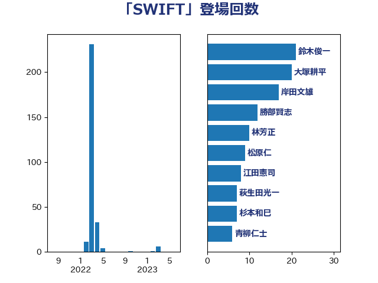

単語「SWIFT」

| 鈴木俊一 | 自由民主党 | 21 回 |
| 大塚耕平 | 国民民主党 | 20 回 |
| 岸田文雄 | 自由民主党 | 17 回 |
| 勝部賢志 | 立憲民主党 | 12 回 |
| 林芳正 | 自由民主党 | 10 回 |
| 松原仁 | 立憲民主党 | 9 回 |
| 江田憲司 | 立憲民主党 | 8 回 |
| 萩生田光一 | 自由民主党 | 7 回 |
| 杉本和巳 | 日本維新の会 | 7 回 |
| 青柳仁士 | 日本維新の会 | 6 回 |
| 鈴木敦 | 国民民主党 | 6 回 |
| 野田佳彦 | 立憲民主党 | 6 回 |
| 櫻井周 | 立憲民主党 | 6 回 |
| 藤巻健太 | 日本維新の会 | 5 回 |
| 浅田均 | 日本維新の会 | 5 回 |
| 石井章 | 日本維新の会 | 4 回 |
| 熊谷裕人 | 立憲民主党 | 4 回 |
| 末松義規 | 立憲民主党 | 4 回 |
| 山岡達丸 | 立憲民主党 | 4 回 |
| 大串博志 | 立憲民主党 | 4 回 |
| 阿部司 | 日本維新の会 | 3 回 |
| 杉尾秀哉 | 立憲民主党 | 3 回 |
| 徳永久志 | 無所属 | 3 回 |
| 小田原潔 | 自由民主党 | 3 回 |
| 太栄志 | 立憲民主党 | 3 回 |
| 佐藤正久 | 自由民主党 | 3 回 |
| 西田実仁 | 公明党 | 2 回 |
| 篠原豪 | 立憲民主党 | 2 回 |
| 松野博一 | 自由民主党 | 2 回 |
| 小野田紀美 | 自由民主党 | 2 回 |
| 吉田宣弘 | 公明党 | 2 回 |
| 下条みつ | 立憲民主党 | 2 回 |
| 音喜多駿 | 日本維新の会 | 1 回 |
| 角田秀穂 | 公明党 | 1 回 |
| 蓮舫 | 立憲民主党 | 1 回 |
| 落合貴之 | 立憲民主党 | 1 回 |
| 紙智子 | 日本共産党 | 1 回 |
| 稲富修二 | 立憲民主党 | 1 回 |
| 礒崎哲史 | 国民民主党 | 1 回 |
| 石井正弘 | 自由民主党 | 1 回 |
| 玉木雄一郎 | 国民民主党 | 1 回 |
| 浜口誠 | 国民民主党 | 1 回 |
| 森本真治 | 立憲民主党 | 1 回 |
| 平木大作 | 公明党 | 1 回 |
| 小野泰輔 | 日本維新の会 | 1 回 |
| 小林鷹之 | 自由民主党 | 1 回 |
| 小島敏文 | 自由民主党 | 1 回 |
| 中野洋昌 | 公明党 | 1 回 |
| 中川宏昌 | 公明党 | 1 回 |